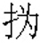
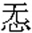
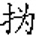

旅隼
文雅书生中也真有特别善于下泪的人物，说是因为近来中国文坛的混乱[133]，好像军阀割据，便不禁“呜呼”起来了，但尤其痛心诬陷。
其实是作文“藏之名山”的时代一去，而有一个“坛”，便不免有斗争，甚而至于谩骂，诬陷的。明末太远，不必提了；清朝的章实斋和袁子才[134]，李莼客和赵

叔[135]，就如水火之不可调和；再近些，则有《民报》和《新民丛报》之争[136]，《新青年》派和某某派之争[137]，也都非常猛烈。当初又何尝不使局外人摇头叹气呢，然而胜负一明，时代渐远，战血为雨露洗得干干净净，后人便以为先前的文坛是太平了。在外国也一样，我们现在大抵只知道嚣俄和霍普德曼[138]是卓卓的文人，但当时他们的剧本开演的时候，就在戏场里捉人，打架，较详的文学史上，还载着打架之类的图。所以，无论中外古今，文坛上是总归有些混乱，使文雅书生看得要“悲观”的。但也总归有许多所谓文人和文章也者一定灭亡，只有配存在者终于存在，以证明文坛也总归还是干净的处所。增加混乱的倒是有些悲观论者，不施考察，不加批判，但用“彼亦一是非，此亦一是非”[139]的论调，将一切作者，诋为“一丘之貉”。这样子，扰乱是永远不会收场的。然而世间却并不都这样，一定会有明明白白的是非之别，我们试想一想，林琴南[140]攻击文学革命的小说，为时并不久，现在那里去了？
只有近来的诬陷，倒像是颇为出色的花样，但其实也并不比古时候更厉害，证据是清初大兴文字之狱的遗闻。况且闹这样玩意的，其实并不完全是文人，十中之九，乃是挂了招牌，而无货色，只好化为黑店，出卖人肉馒头的小盗；即使其中偶然有曾经弄过笔墨的人，然而这时却正是露出原形，在告白他自己的没落，文坛决不因此混乱，倒是反而越加清楚，越加分明起来了。
历史决不倒退，文坛是无须悲观的。悲观的由来，是在置身事外不辨是非，而偏要关心于文坛，或者竟是自己坐在没落的营盘里。
八月十日。
注 释
[132] 本篇最初发表于1933年8月14日《申报·自由谈》，原题《悲观无用论》。
[133] 中国文坛的混乱 1933年8月9日《大晚报·火炬》载小仲的《中国文坛的悲观》一文，其中说：“中国近几年来的文坛，处处都呈现着混乱，处处都是政治军阀割据式的小缩影”，“文雅的书生，都变成狰狞面目的凶手”，“把不相干的帽子硬套在你的头上，……直冤屈到你死！”并慨叹道：“呜呼！中国的文坛！”
[134] 章实斋（1738—1801） 名学诚，字实斋，浙江会稽（今绍兴）人，清代史学家。袁子才（1716—1798），名枚，字子才，浙江钱塘（今杭县）人，清代诗人。袁枚死后，章学诚在《丁巳札记》内针对袁枚论诗主张性灵及收纳女弟子的事，攻击袁枚为“无耻妄人，以风流自命，蛊惑士女”。此外，他又著有《妇学》、《妇学篇书后》、《书坊刻诗话后》等文，也都是攻击袁枚的。
[135] 李莼客（1830—1894） 名慈铭，字

伯，号莼客，浙江会稽人，清末文学家。赵
叔（1829—1884），名之谦，字叔，浙江会稽人，清末书画篆刻家。李慈铭在所著《越缦堂日记》中常称赵之谦为“妄人”，攻击赵之谦“亡赖险诈，素不知书”，“是鬼蜮之面而狗彘之心”。（见光绪五年十一月廿九日日记）[136] 《民报》和《新民丛报》之争 指清末同盟会机关报《民报》同梁启超主办的《新民丛报》关于民主革命和君主立宪的论争。《民报》，月刊，1905年11月在日本东京创刊，1908年冬被日本政府查禁，1910年初在日本秘密印行两期后停刊。《新民丛报》，半月刊，1902年2月在日本横滨创刊，1907年冬停刊。
[137] 《新青年》派和某某派之争 指《新青年》派和当时反对新文化运动的封建复古派进行的论争。《新青年》，“五四”时期倡导新文化运动、传播马克思主义的综合性月刊。1915年9月创刊于上海，由陈独秀主编，第一卷名《青年杂志》，第二卷起改名《新青年》。1918年1月起李大钊、胡适等参加该刊编辑工作，1922年7月休刊。
[138] 嚣俄 通译雨果。1830年2月25日，雨果的浪漫主义剧作《欧那尼》在巴黎法兰西剧院上演时，拥护浪漫主义文学的人们同拥护古典主义文学的人们在剧院发生尖锐冲突，喝彩声和反对声混成一片。霍普德曼（G.Hauptmann，1862—1946），通译霍普特曼，德国剧作家，著有剧本《织工》等。1889年10月20日，霍普特曼的自然主义剧作《日出之前》在柏林自由剧院上演时，拥护者和反对者也在剧院发生尖锐冲突，欢呼声和嘲笑声相杂，一幕甚于一幕。
[139] “彼亦一是非，此亦一是非” 语出《庄子·齐物论》。
[140] 林琴南（1852—1924） 名纾，字琴南，福建闽侯（今属福州）人，翻译家。他曾据别人口述，以文言翻译欧美文学作品一百多种，在当时影响很大，后集为《林译小说》。他晚年是反对“五四”新文化运动的守旧派代表人物之一。他攻击文学革命的小说，有《荆生》与《妖梦》（分别载于1919年2月17日至18日、3月19日至23日上海《新申报》），前篇写一个所谓“伟丈夫”荆生，将大骂孔子、提倡白话者打骂了一顿；后篇写一个所谓“罗睺罗阿修罗王”将“白话学堂”（影射北京大学）的校长、教务长吃掉等事。